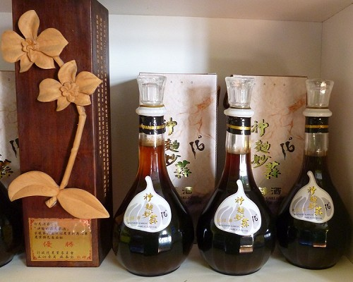
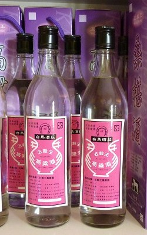

The White Horse Farm established its winery and began its brewing activities in 2002. It focuses on producing healthy, natural remanufactured wines that do not add additional fragrances or spices. When we first arrived here, we noticed that the equipment for production were not very large in size. The owner explained to us that wineries are regulated by the government and can only product a maximum of 6,000 liters of wine per year (which can fill only 10,000 bottles). Therefore, this facility is used to develop liquor types that the larger liquor vendors do not make. All raw materials are from local farms, such as: joining forces vendors from Changhua’s flower industry (where Jasmines come from) to produce Jasmine Sweet Wine.
The types of remanufactured wines produced here are listed below:
PS: Wines produced using brewed wine or distilled wine as a base wine, and then adding other materials to produce a different type of flavor are called “remanufactured wines.”
|
Jasmine Sweet Wine
Composition: Jasmine, Base Wine
Alcohol content: 16%
This wine has a slightly sweet taste and the scent of jasmine, making it very popular among female wine lovers |
|
|
Garlic Wine
Composition: Garlic, Base Wine
Alcohol content: 22%
This wine preserves the nutritional essence of garlic, without the spiciness. |
|
|
Grape Wine (Port Wine)
Composition: Grapes, Base Wine
Alcohol content: 13%
This wine has a slightly sweet taste, with the scent of grapes. |
|
|
Grape Wine (Pearl Hunter)
Composition: Grapes
Alcohol content: 11%
This wine has a slightly sweet taste, with the scent of grapes. |
|
|
Grain Liquor
Composition: Buckwheat, Millet, Glutinous Rice, Maize, Sorghum
Alcohol content: 56%
This liquor is strong and also has a strong scent. It is completely purely brewed, without being diluted with any water or fragrances. This liquor is perfect for people who seek to become even healthier through moderate drinking. |
|
|
Black Bean Wine
Composition: Fried Black Beans, Base Wine
This wine is excellent for providing a DIY experience, its taste is suitable for people of all ages, and its alcohol content can be chosen according to your preferences. |
|
|
Mulberry Wine
Alcohol content: 16%
This wine has a slightly sweet taste and is perfect for making cocktails. One bottle of Mulberry Wine with one pack of ice is a delicious mixing recipe. |
|
 |
Garlic Wine (Super Yeast Wine)
Composition: Garlic, Base Wine
Alcohol content: 16%
This garlic wine won the Outstanding Product Award in the Agricultural Specialty Competition held by the Council of Agriculture. |
|
Below are various types of distilled spirits:
PS: Taking fermented wine and heating it, and then collecting and condensing the evaporated gas produces “distilled spirits,” whose alcohol contents are relatively higher.
|
Taro Wine
Composition: Taro
Alcohol content: 35%
Once you open the bottle, the aroma of taro immediately fills the air. |
|
 |
Kaoliang Liquor
Composition: Wheat, Sorghum
Alcohol content: 43%
Taste: Thick and mellow |
|
▲TOP |